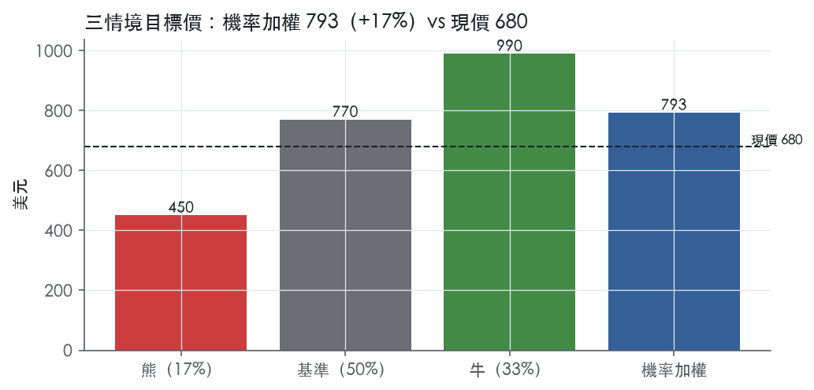
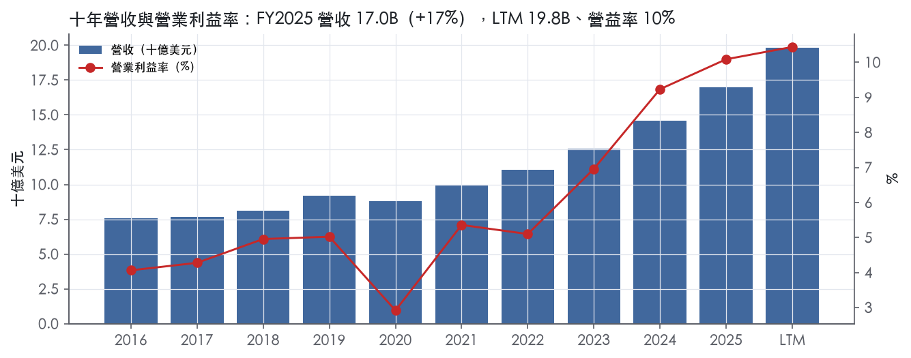
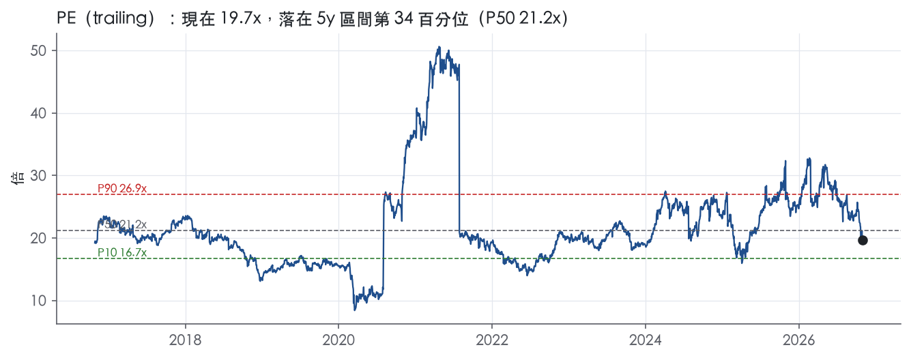
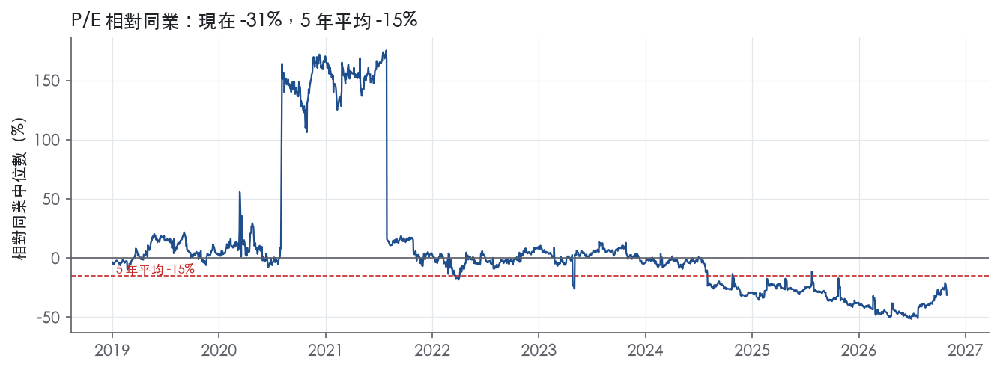
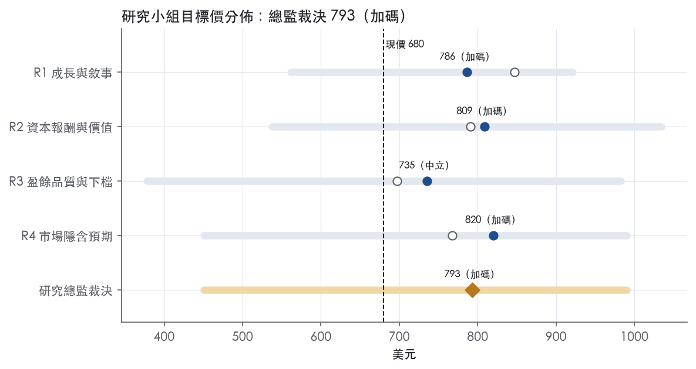
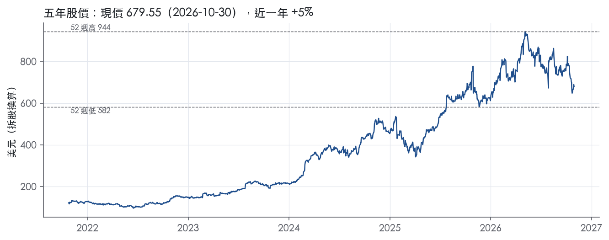

評等總表 › 工業 › EME
訂單撐盈餘、倍數不重評，溫和看多｜評等 加碼｜目標價 793
| 報告日 | 評等 | 目標價 | 當時股價 | 超額報酬 |
|---|---|---|---|---|
| 2026-10-30 | 加碼 | 793 | 680 | +6.9% |
| 評等 | 加碼（邊界，鄰近中立） |
| 12 個月目標價 | 793 美元 |
| 現價 | 679.55 美元（2026-10-30） |
| 預期報酬 | 股價 +16.7%＋股息 0.2%＝總報酬 +16.9%；同業籃門檻 10.0%，超額 +6.9% |
| 估值方法 | P/E 16.9x，套在第 5–8 季的EPS（也就是一年後的未來四季） |
| 三情境 | 熊 450／基準 770／牛 990 |
| 研究流程 | 四位研究員兩輪辯論＋研究總監裁決 |
| 資料來源 | SEC EDGAR XBRL、Tiingo、FRED（全免費） |
訂單撐盈餘、倍數不重評，溫和看多（研究總監裁決，四位研究員兩輪辯論後）
評等 加碼（邊界，鄰近中立）｜12 個月目標價 793 美元（總監三情境機率加權 788 與研究員中位數 798 各半）｜現價 679.55（2026-10-30）
預期報酬：股價 +16.7%＋股息 0.2%＝總報酬 +16.9%。同業籃門檻 10.0%，超額 +6.9%，離中立的分界不到三個百分點，屬邊界評等（落在其他級距的機率約三成）。
估值方法：P/E 16.9x，套在第 5–8 季的EPS（也就是一年後的未來四季）。三情境：熊 450（17%）／基準 770（50%）／牛 990（33%）。
什麼會讓研究總監改變看法：RPO 連兩季季減或 2027 年初雲端業者下修資本支出，y2 降回 10% 以下、立場轉中性；FY2027Q1 季節低點營益率 ≥10% 且 RPO 續增，倍數往 P75 17.4x 靠。
| 過去四季（實際，FY2026Q3） | 未來四季 | 第 5–8 季 | 第 9–12 季 | |
|---|---|---|---|---|
| 營收（B） | 19.8B | 23.8B | 26.9B | 28.5B |
| 營收成長 | 22.1% | 20.0% | 13.0% | 6.0% |
| 營業利益率 | 10.4% | 10.0% | 10.0% | 9.8% |
| EPS（美元） | 34.57 | 39.66 | 45.55 | 48.09 |
| EPS 成長 | 39.4% | 14.7% | 14.8% | 5.6% |
| 每股股息（美元） | 1.45 | 1.45 | 1.45 | 1.45 |
| P/E（現價） | 19.7x | 17.1x | 14.9x | 14.1x |
| 股息殖利率（現價） | 0.2% | 0.2% | 0.2% | 0.2% |
過去四季為申報數字；預測為研究總監的假設、程式計算。倍數與殖利率都用現價計算，用來看現價對應各期獲利的高低。
| 情境 | 機率（歷史） | 故事 | 未來四季營收成長 | 第 5–8 季營益率 | 倍數 | 目標價 | 股價漲跌 |
|---|---|---|---|---|---|---|---|
| 熊 | 17%（16%） | 風險表第 1 條資料中心資本支出降溫疊加第 2 條固定價合約成本重估：RPO 季減、搶標壓價，對應本行下行路徑，倍數回到事後實現帶 P25–P50 | 12.0% | 9.3% | 12.5x | 450 | -33.7% |
| 基準 | 50%（49%） | RPO 依節奏轉營收、GAAP 營益率停在 10% 高原、前瞻倍數不變，報酬來自盈餘成長 | 20.0% | 10.0% | 16.9x | 770 | 13.3% |
| 牛 | 33%（35%） | Q3 的 28.8% 動能只降到 25%，醫療、水務、機構與資料中心同步，組合移向電氣機械把營益率推向 11%，類股回到自家 5 年中位數附近 | 25.0% | 10.8% | 18.5x | 990 | 45.7% |
目標價由程式依研究總監的驅動與倍數計算；機率由研究總監給定。括號內是歷史頻率：把這檔股票過去十年 12 個月報酬的波動形狀，置中在基準情境，結果落在各情境附近的比例。

四位研究員用不同方法各自估值，回應研究總監的質疑後交出第二輪，最後由總監逐點裁決。各研究員的主張見第七章，裁決理由見第八章，完整論證見《研究底稿》。
| 立場（一輪→二輪） | 加權目標價（一輪→二輪） | 評等（一輪→二輪） | 第二輪倍數 | 熊～牛目標價 | |
|---|---|---|---|---|---|
| R1 成長與敘事 | 看多→看多 | 847→786 | 加碼→加碼 | 20.5x | 562～921 |
| R2 資本報酬與價值 | 看多→看多 | 791→809 | 加碼→加碼 | 19.7x | 538～1034 |
| R3 盈餘品質與下檔 | 中性→看空 | 697→735 | 減碼→中立 | 16.0x | 378～983 |
| R4 市場隱含預期 | 看多→看多 | 768→820 | 中立→加碼 | 16.9x | 450～990 |
| 研究總監裁決 | 看多 | 793 | 加碼 | 16.9x | 450～990 |
目標價由程式依各自的驅動與倍數計算；評等＝機率加權總報酬 − 同業籃門檻。
EMCOR Group 是一家靠併購與有機成長雙軌堆疊出來的機電工程與設施服務集團，核心業務是替商業、工業、機構與公共部門客戶做電氣與機械承包、建築服務與工業服務。公司自我定位為「A Fortune 500 company and a member of the S&P 500, EMCOR Group, Inc. is a leader in mechanical and electrical construction services, industrial and energy infrastructure, and building services.」¹。FY2025 營收 16,986,422 千美元（約 16.99B），創下公司歷史新高²。客戶需求「broad-based with strength across most of the market sectors we serve」²，代表公司的收入來源分散在多個終端市場而非單一產業週期。
EMCOR 共有五個可報導分部：美國電氣工程與設施服務、美國機械工程與設施服務、美國建築服務、美國工業服務，以及已出售的英國建築服務²。FY2025 營收結構：美國電氣工程與設施服務 5,074,252 千美元，占總營收 30%；美國機械工程與設施服務 7,050,481 千美元，占 42%；美國建築服務 3,122,242 千美元，占 18%；美國工業服務 1,268,099 千美元，占 7%；英國建築服務 471,348 千美元，占 3%²。相較 FY2024，電氣分部營收年增 1.73B 美元，主因 Miller Electric 併購貢獻 1.11B 美元增量營收，幾乎全部來自這筆收購²；機械分部年增 644.8M 美元，併購貢獻 145.2M 美元²；建築服務分部營收幾乎持平（3.12B 對 3.11B）²；工業服務分部是唯一衰退的分部，因渦輪檢修（turnaround）需求下滑及一個再生燃料專案完工²。獲利能力上，電氣分部營益率 12.1%、機械分部 12.8%、建築服務 6.0%、工業服務僅 2.0%，顯示電氣與機械兩個營建分部是集團的利潤引擎，建築服務與工業服務相對薄利²。遞延未完工訂單（RPO）方面，電氣分部占總 RPO 38%、機械分部 52%，兩者合計近九成，代表公司未來營收的可視度高度集中在這兩個營建分部²。
EMCOR 幾乎全部營收來自美國本土，FY2025 美國各分部合計占總營收 97%，英國（已於 2025年12月出售）僅占 3%²。客戶分佈於多個市場終端，10-K 列舉的成長驅動產業包括 network and communications（資料中心建設需求最強）、healthcare、commercial（含 tenant fit-out 與倉儲配送專案）、institutional（含教育與公部門專案）、hospitality and entertainment、transportation 及 water and wastewater²；相對地，high-tech manufacturing（半導體、生技廠房專案完工）則是拖累營收的產業²。通路上，公司高度依賴長週期建案合約與維護服務合約（service contract base）的組合，且公開部門合約通常要求更高比例的 surety bonds²。截至 FY2025 底，公司對 surety bonds 的最大風險暴露約為 3.03B 美元，占總 RPO 的約 23%²。資料中心（AI 基礎設施）相關的網路與通訊市場，是公司目前成長最快、也最具敘事性的客戶群。
FY2025Q4 營收 4.51B 美元，年增 19.7%，營益率躍升至 12.7%（is/dv 資料包）。FY2026Q1 營收 4.63B 美元，年增 19.7%，但營益率回落至 8.7%（資料包）。FY2026Q2 營收創紀錄達 5.15B 美元，年增 19.8%，營益率 10.6%，EPS 9.06 美元，年增 34.8%³；公司將 2026 全年營收指引由 18.5B–19.25B 美元上調至 20.0B–20.5B 美元，EPS 指引由 28.25–29.75 美元上調至 32.00–33.25 美元³。FY2026Q3 營收再創單季紀錄 5.54B 美元，年增 28.8%，營益率 9.8%（Non-GAAP 10.5%），EPS 9.04 美元，年增 37.6%（Non-GAAP EPS 9.60 美元）¹；RPO 達 18.57B 美元，年增 47.2%¹。公司同時將 2026 全年營收指引再上調至 20.6B–21.0 billion 美元，Non-GAAP 營益率約 10%，Non-GAAP EPS 指引上調至 34.50–35.50 美元，並將股票回購額度增加 500 million 美元¹。整體來看，近四季營收加速成長（年增率從 19.7% 一路拉高到 28.8%），獲利率溫和擴張，指引連續三次上修，顯示需求尚未見頂。
CEO Tony Guzzi 將 Q3 的表現歸因於「strong revenue growth, coupled with excellent field execution and improved SG&A leverage」，並表示「We continued to outgrow the broader non-residential construction market, reinforcing the depth of demand for our services」¹。公司在 RPO 成長的解釋中特別點名 network and communications 市場，因為「mission critical facilities continue to require substantial electrical infrastructure and increasingly sophisticated cooling systems」¹，並提到 Healthcare、Water and Wastewater、Institutional、Manufacturing and Industrial 等大型終端市場客戶投資同樣貢獻成長¹。在資本配置策略上，公司強調「balanced and disciplined capital allocation」並將回購計畫擴大 500M 美元，CEO 表示此舉反映「our strong financial position, confidence in the long-term prospects of our business」¹。10-K 層級的成長敘事則是併購（如 Miller Electric 以約 876.8M 美元現金對價收購）疊加有機成長，公司並稱其在電氣與機械兩個營建分部投資「virtual design and construction, prefabrication, and automation」以提升專案執行效率²。整體而言，EMCOR 的成長故事高度集中在資料中心／AI 基礎設施帶動的電力與散熱需求，這是目前最大的單一敘事風險與機會來源。公司過去三年用併購（尤其是 Miller Electric）大幅擴大電氣分部規模，已讓集團對單一終端市場（network and communications）的依賴度上升，一旦資料中心資本支出週期轉弱，RPO 與營收成長率可能同步快速降溫。目前指引連續上修且 RPO 續創新高，顯示短期能見度仍佳，但估值已反映相當樂觀的成長假設。

EMCOR 有護城河，但屬於窄護城河：我們有把握它在未來 5 年以上維持 ROIC 高於資本成本，卻沒有把握撐到 10 年以上。優勢來自規模帶來的成本與執行效率，以及財務實力換來的擔保能力，兩者都不是競爭者無法複製的結構性壁壘。近三年 ROIC 與利潤率大幅上升，主要反映資料中心需求週期與組合改善，不代表護城河本身變寬，所以趨勢評為穩定。
成本優勢是主要來源：規模讓 EMCOR 能投資對手難以分攤的生產力工具。機械分部 FY2025 的獲利改善被歸因於「better project execution, including enhanced productivity, due in part to investments in virtual design and construction, prefabrication, and automation」²。毛利率改善同樣被歸因於「improved revenue mix and excellent project execution」²。Miller Electric 以約 876.8M 美元現金收購，讓電氣分部規模擴大，預製與設計能力可攤提在更大的營收基礎上²。
規模也體現在擔保能力，我們把它歸在成本優勢：營建合約常以 surety bonds 作為得標條件²。公司說擔保額度取決於「our financial strength and the absence of any default by us on any surety bond issued on our behalf」²。截至 FY2025 底，擔保暴露約 3.03B 美元，約占總 RPO 的 23%²。淨負債為 -0.77B，淨現金部位讓公司取得擔保的成本與門檻低於中小型承包商，在大型公共與關鍵設施標案上形成實質進入障礙。
我們不列無形資產、網路效應與效率規模，因為原文找不到品牌溢價、專利或自然獨占市場的證據。轉換成本也不列：建築服務分部的服務合約基礎確實在成長²，但同一分部出現「the loss of certain facilities maintenance contracts that were not renewed upon rebid in a prior period」²，顯示客戶重新招標時並不難更換廠商。
數字支持「窄」，不支持「寬」。ROIC 十年平均 29.8%，高於資本成本代理值 10.0%，平均超額報酬 19.8%。有資料的 9 年中有 8 年高於資本成本。公司商譽減損測試用的營建分部 WACC 為 10.4%²，與代理值相近，代表這個比較基準可信。
衝突在穩定度。ROIC 標準差 17.8%，最低 9.8%、最高 60.8%，最低點出現在 FY2020，當年跌破資本成本。營業利益率十年平均僅 5.8%，最低 2.9%。毛利率標準差 1.8% 看似穩定，但十年平均只有 15.9%，屬於承包商水準，沒有定價權溢價。高 ROIC 有相當部分來自輕資本、預收款的承包模式，這是產業共通結構，不是 EMCOR 獨有。最新 ROIC 60.8%是週期高點，不應外推。我們維持「窄」而不下修為「無」，理由是即使在 FY2020 衝擊下，ROIC 也只是貼近資本成本，沒有轉為大幅負超額報酬，而且其餘年份全數高於資本成本。
第一是需求週期反轉後的價格競爭。公司自承「during economic downturns, there have typically been fewer small discretionary projects from the private sector and our competitors have aggressively bid larger long-term infrastructure and public sector contracts」²。資料中心是目前最大的成長來源，一旦資本支出降溫，產能會湧向其他市場壓低報價。
第二是專案估計風險。未完工專案的整體毛利率估計變動 50 個基點，就會使營業利益增減約 175M 美元²，承包模式的利潤彈性遠大於護城河能緩衝的幅度。
第三是勞動力。電氣分部在新地區遇到「reduced labor productivity or availability while investing in the development of a workforce」²，代表規模優勢在跨區擴張時不會自動移轉。
第四是擔保市場。公司表示「a reduction in the availability of surety bonds could have a material adverse effect on our financial position, results of operations, and/or cash flows」²。
目標倍數相對同業應持平，不應給溢價。EMCOR 的超額報酬是真的，但屬於窄護城河加上週期高點的組合；用 FY2025 的 60.8% ROIC去支撐溢價倍數，等於把週期當成結構。建議以自身 5 年 P/E 中位數 21.2x作為上限參考，並在終值假設中讓 ROIC 回歸到十年平均附近，而不是停在高點。
| 指標 | 最新 | 十年平均 | 標準差 | 最低 | 最高 |
|---|---|---|---|---|---|
| ROIC | 60.8% | 29.8% | 17.8% | 9.8% | 60.8% |
| 毛利率 | 19.3% | 15.9% | 1.8% | 13.7% | 19.3% |
| 營業利益率 | 10.1% | 5.8% | 2.2% | 2.9% | 10.1% |
| FCF 利潤率 | 7.0% | 5.2% | 2.3% | 2.8% | 9.2% |
| ROE | 38.5% | 21.7% | 10.2% | 6.5% | 38.5% |
程式計算。資本成本代理值（10 年債＋5%）：10.0%；ROIC 平均減資本成本：19.8%；ROIC 有資料的 9 年中，高於資本成本 8 年。
EMCOR 的 LTM 營業現金流／淨利為 1.04x、自由現金流／淨利 0.96x，十年平均更高達 1.71x／1.55x，應計比率長期為負值（LTM -0.6%、十年平均 -3.1%），顯示盈餘是現金在支撐、不是靠應計堆出來的。計分表九項中僅「（股利＋回購）／淨利」為黃燈，其餘全為綠燈，且該黃燈是公司現金太多、回饋相對保守所致，不構成品質疑慮。
跟上，而且長期是現金流領先淨利、不是落後。LTM 營業現金流／淨利 1.04x、三年平均 1.28x、十年平均 1.71x，全部在綠燈區，代表過去十年每一塊淨利平均能轉換出 1.71 塊營業現金流。FCF／淨利同樣綠燈（LTM 0.96x、三年 1.19x、十年 1.55x），資本支出極輕（十年多在 0.4%–0.7% 營收）（資料包年度表），不吃現金。應計比率連續為負（FY2025 之前十年平均 -3.1%、LTM -0.6%），遠優於＞5.0%的紅燈門檁，顯示營收認列（完工比例法下的 cumulative catch-up 調整）沒有系統性超前現金收取⁴。唯一要留意的是應收帳款成長略快於營收成長（FY2025 為 +1.9pp），但仍遠低於 15pp 紅燈門檁，屬於正常營運資金波動。
本季調整項單一且明確：3Q26 GAAP 淨利 399.9M、EPS 9.04，排除無形資產非現金減損損失 34.0M（稅後 24.7M）後，非 GAAP 淨利 424.7M、EPS 9.60¹。GAAP 營業利益 545.8M（9.8%營益率），排除同一減損後非 GAAP 營業利益 579.8M（10.5%營益率）¹。前九月同樣只有這筆34.0M減損（稅後24.7M），對比去年同期Miller Electric併購交易成本9.4M（稅後6.9M）¹。這筆無形資產減損是非現金、一次性項目，排除它是合理的，不是在美化經常性營業表現；但公司全年財測已改用「Non-GAAP Diluted EPS」34.50–35.50為guidance主軸¹，意味管理層的溝通語言本身就是非GAAP，估值研究員要清楚知道GAAP與non-GAAP的落差目前僅來自這一筆減損，規模不大（約EPS 0.56/季），不影響品質判斷。
槓桿幾乎不存在，淨負債為負（淨現金），LTM 淨負債／EBITDA -0.34x，十年平均 -0.66x，遠優於＞3.00x紅燈，利息保障倍數十年平均82.1x、近三年183.1x，均綠燈；最新一期總債務已降至0.00B、現金0.77B（資料包季表）。資本配置以回購與股利為主：股東回饋占淨利比LTM 43.7%，近三年42.6%，十年平均65.4%，稀釋股數持續下降（十年平均-3.3%、近三年-3.4%），顯示公司是淨減少股數的回購者而非稀釋股東。公司本次再加碼500M回購授權，並明言「funded by the Company's operations」¹，不靠舉債買回股票，資本配置紀律良好。RPO（未完工訂單）達18.57B，年增47.2%¹，顯示現有盈餘品質的現金轉換能力有望延續到未來幾個季度，但这是前瞻訊息不代表已實現現金流。
程式計分表九項指標中八項為綠燈，僅一項黃燈，無紅燈，逐一回應如下：
10-K中提及的goodwill／無形資產減損風險、cyber資安風險屬於一般性揭露風險因子，非本期已發生的紅旗項目，本期僅有34.0M無形資產減損已在非GAAP調整中處理，屬一次性非現金項目⁴¹。
盈餘品質高，估值可直接用GAAP數字做基礎，不需要像應計比率偏高的公司那樣對盈餘打折。非GAAP調整項（本季34.0M減損）金額小且屬非現金一次性，GAAP與non-GAAP的EPS差距僅0.56，估值模型兩者皆可採用但建議以GAAP LTM EPS 34.57為主、搭配管理層guidance的non-GAAP EPS區間34.50–35.50做交叉檢查¹。淨現金的資產負債表（淨負債/EBITDA -0.34x）代表槓桿完全不構成倍數上限的限制因子，EV/EBITDA 12.7x的估值倍數可以用現金流與盈餘品質的穩健性支撐，不需因財務風險而折價。
| 項目 | LTM | 近三年 | 十年 | 燈號 | 規則 |
|---|---|---|---|---|---|
| 營業現金流／淨利 | 1.04x | 1.28x | 1.71x | 綠 | ≥1.00x 綠、<0.80x 紅 |
| 自由現金流／淨利 | 0.96x | 1.19x | 1.55x | 綠 | ≥0.90x 綠、<0.60x 紅 |
| 應計比率（(淨利−CFO)／平均總資產） | -0.6% | -3.4% | -3.1% | 綠 | ≤0.0% 綠、>5.0% 紅 |
| SBC／營收 | — | — | — | — | ≤3.0% 綠、>8.0% 紅 |
| 淨負債／EBITDA | -0.34x | -0.78x | -0.66x | 綠 | ≤1.50x 綠、>3.00x 紅 |
| 利息保障倍數（營業利益／利息） | — | 183.1x | 82.1x | 綠 | ≥8.00x 綠、<3.00x 紅 |
| 稀釋股數年變動 | -0.7% | -3.4% | -3.3% | 綠 | ≤0.0% 綠、>3.0% 紅 |
| （股利＋回購）／淨利 | 43.7% | 42.6% | 65.4% | 黃 | ≥50.0% 綠、<0.0% 紅 |
| 應收帳款成長 − 營收成長（FY2025） | +1.9pp | — | — | 綠 | ≤5pp 綠、>15pp 紅 |
程式計算；燈號以 LTM（無則近三年平均）判定。
| 風險 | 觸發指標（看什麼數字、在哪裡看） | 對 EPS 的影響方向與粗略幅度 | 未來 12 個月發生機率（高／中／低） | 出處 |
|---|---|---|---|---|
| 資料中心（network and communications）需求降溫 | 每季 RPO 總額與分產業增速（8-K 季報）；電氣／機械分部營收年增率 | 負向，大：RPO 年增已達 47.2%，若趨緩電氣分部營益率（12.1%）為集團利潤引擎會率先受壓¹² | 中 | 研究判斷 |
| 固定價格合約的成本估計誤差（通膨、供應鏈、人工生產力） | 單季營益率波動（FY2026Q1 僅 8.7% vs FY2025Q4 12.7%，資料包）；原物料（銅、鋼）與燃油價格 | 負向，中：公司明言「variations from estimated contract costs can have a significant impact on...any fiscal quarter or year」⁵ | 中 | 10-K 年報 FY2025 Item 1A（風險因素） |
| 聯邦/州政府支出遞延或刪減（含 CHIPS Act、IRA 資金） | 政府預算僵局、政府關門公告；government site-based division 營收占美國建築服務 5%² | 負向，小至中：government site-based 僅占美國建築服務收入 5%，但公開部門整體合約對 surety bond 要求更高，牽動 RPO 可執行性² | 中 | 10-K 年報 FY2025 Item 1A（風險因素） |
| 利率/信用環境收緊，拖累私部門客戶資本支出決策 | ust10y、hy_oas；私部門專案延後或取消的公告 | 負向，中：公司明言經濟下行時「certain of our ultimate customers have delayed or canceled projects...with respect to more profitable private sector work」⁵ | 低 | 10-K 年報 FY2025 Item 1A（風險因素） |
| 自保／保險成本上升與理賠估計不足（災害性天氣、保費上升） | 保險市場條件（collateral/letter of credit 要求）；每季 SG&A 與其他費用科目異常波動 | 負向，小：公司承認「insurance market...characterized by higher premiums, diminished capacity」，可能需要額外抵押品降低流動性⁵ | 低 | 10-K 年報 FY2025 Item 1A（風險因素） |
資料中心需求降溫是五條裡影響幅度最大的一條。公司 10-K 明言「capital spending on data center infrastructure to support cloud storage and artificial intelligence...is rapidly expanding, which has increased demand for our services in recent years. If such spending were to decrease, demand for our services could decline」⁵。8-K 進一步證實 FY2026Q3 RPO 達 18.57B 美元、年增 47.2%，「most significant RPO growth occurred within the Network and Communications market sector」¹。業務概況章也指出電氣分部靠 Miller Electric 併購大幅擴張規模，RPO 中電氣加機械合計占近九成²，意味集團未來營收可視度高度集中在這兩個營建分部，而這兩個分部的近期成長引擎又高度集中在資料中心這一個終端市場。監測方法是每季看 RPO 年增率與各市場分項揭露，一旦 network and communications 的增速明顯放緩，就是領先指標。
固定價格合約成本估計誤差是公司 10-K 篇幅最長、措辭最直接的風險段落，原文稱「the actual cost of labor and materials, as well as the level of labor productivity achieved, may vary from our original estimates...due to inflationary pressures, supply chain challenges, labor market tightness, and elevated interest rates」⁵。這條風險已經在近期財報數字上留下痕跡：FY2026Q1 營益率僅 8.7%，明顯低於 FY2025Q4 的 12.7%（資料包），雖然後兩季回升到 9.8%-10.6%，顯示單季波動本身就是常態。可觀測指標是每季營益率對比前季與去年同期的落差，若單季跌幅超過 2 個百分點需留意是否有特定專案發生成本重估。
政府支出遞延或刪減在 10-K 中被列為獨立段落，原文稱「reduced or delayed spending by the federal government...may have a material and adverse impact on our business」，並點名 CHIPS Act 與 Inflation Reduction Act 資金若未完全落實將造成衝擊⁵。業務概況章顯示政府站點服務僅占美國建築服務營收 5%²，直接曝險不算大，但公開部門合約對 surety bond 要求較高，公司揭露最大 surety bond 風險暴露約 3.03B 美元、占總 RPO 約 23%²，若政府信用環境惡化可能連動影響 bonding capacity。監測指標是聯邦預算僵局、政府關門公告發生頻率。
利率與信用環境收緊原文明確提到「tightened availability of credit or increased interest rates have negatively impacted the ability of existing and prospective ultimate customers to fund projects...particularly those in the more profitable private sector」⁵。目前 ust10y 在 4.98%，處於偏高水準，但 hy_oas 僅 3.26，顯示信用利差尚屬平穩，短期內觸發機率偏低。
保險與自保成本原文稱保險市場「characterized by higher premiums, diminished capacity, and more conservative underwriting」，若持續惡化「increased collateral requirements could significantly reduce our liquidity」⁵。此風險對 EPS 的直接衝擊歷史上較小，列為第五順位。
現價 679.55 對應 trailing（過去四季）P/E 19.7x、EV/EBITDA 12.7x、EV/EBITA 13.2x、EV/Sales 1.5x、FCF 殖利率 5.0%。主要估值倍數 P/E 現在 19.7x，落在5 年區間第 34 百分位（P10／P50／P90 = 16.7x／21.2x／26.9x）。

把程式的機械基準預測放到現價下，市場付的前瞻倍數是：P/E（未來四季） 16.9x、P/E（第 5–8 季） 14.9x。反推 DCF 顯示市價隱含未來五年營收年成長 4.0%（WACC 9.0%、終值成長 3.0%、FCF 利潤率 8.1%，SBC 不加回）。
| 倍數 | 現在 | 5 年 P10 | 5 年 P50 | 5 年 P90 | 現在分位 | 全期 P50 |
|---|---|---|---|---|---|---|
| P/E | 19.7x | 16.7x | 21.2x | 26.9x | 34.2% | 20.4x |
| EV/EBITDA | 12.8x | 9.1x | 12.0x | 17.8x | 58.0% | 11.1x |
| EV/EBITA | 13.3x | 9.9x | 12.8x | 18.5x | 55.2% | 12.0x |
| EV/EBIT | 14.1x | 11.0x | 14.1x | 19.7x | 51.1% | 13.5x |
| EV/Sales | 1.5x | 0.6x | 0.8x | 1.9x | 67.2% | 0.6x |
| P/S | 1.5x | 0.6x | 1.2x | 1.9x | 67.6% | 0.7x |
| P/FCF | 20.3x | 15.3x | 19.3x | 29.0x | 58.7% | 18.3x |
trailing 倍數（股價 ÷ 過去四季）；分位以每個交易日計算。
同業籃：FIX, PWR, MTZ, PRIM, IESC（手動名單（playbooks/peers.yaml））。評等門檻 10.0%：同業「倍數不變下持有一年」的隱含報酬中位數（＝ FCF 殖利率 ×(1＋g)＋g，g 為 5 年營收年複合成長並夾在 −2%～8%），每家夾在 0～15%、P/E 低於 5 倍視為資料可疑而排除，中位數再限制在 10 年債到 10 年債＋5% 之間（同業原始中位數 11.6%）。
| 代號 | 市值 | 5 年營收 CAGR | 營益率 | ROIC | P/E | 5 年 P/E 中位數 | EV/EBITDA | P/FCF | 隱含報酬 |
|---|---|---|---|---|---|---|---|---|---|
| EME | 29.9B | 14.1% | 10.4% | 60.8% | 19.7x | 21.2x | 12.7x | 20.2x | 13.4% |
| FIX | 43.1B | 26.1% | 16.7% | 73.3% | 26.6x | 27.5x | 18.1x | 17.7x | 14.1% |
| PWR | 93.5B | 20.5% | 6.8% | 9.6% | 56.2x | 51.3x | 26.9x | 29.6x | 11.6% |
| MTZ | 14.9B | 17.7% | 4.7% | 8.4% | 30.4x | — | 13.8x | 36.7x | 10.9% |
| PRIM | 3.9B | 16.8% | 2.9% | 17.8% | 28.5x | 17.7x | 14.3x | 44.5x | 10.4% |
| IESC | 4.1B | 23.1% | 12.4% | 51.3% | 9.2x | 10.5x | 6.7x | 18.0x | 14.0% |
| 同業中位數 | 20.5% | 6.8% | 17.8% | 28.5x | 22.6x | 14.3x | 29.6x | 10.0% |
全部 trailing，程式以各公司 SEC XBRL 與 Tiingo 行情計算；第一列為本檔。
P/E 相對同業中位數：現在 -31.1%，過去 1 年平均 -40.8%、3 年 -25.5%、5 年 -15.1%；EV/EBITDA 相對同業中位數：現在 -10.5%，過去 1 年平均 -21.1%、3 年 -19.5%、5 年 -18.0%。

事後實現前瞻倍數帶（P/E，2018-11-19..2025-11-17）：P10／P50／P90 = 10.4x／14.2x／29.6x。它是每個交易日的股價除以之後四季實際實現的指標；一年後，今天的第 5–8 季正是那時的未來四季，所以這條帶是 12 個月目標價的同口徑倍數。因為用的是事後實際而非當時預期，過去成長超乎預期的公司這條帶會偏低。
程式的機械基準（成長率從過去四季年增率三年收斂到 6%、利潤率持平）用 事後實現前瞻 P/E P50 估值得到 649（-4.6%），市場現行前瞻倍數（現價 ÷ 基準 未來四季指標）一年後持平，套在基準 第 5–8 季指標得到 769。這兩個數字只是參考點，不是本報告的目標價；研究員對這個定價的回應在第七章。
下表是每位研究員第一輪（各自獨立）與第二輪（回應研究總監的質疑後）的結果。目標價全由程式依各自的假設計算。
| 立場（一輪→二輪） | 加權目標價（一輪→二輪） | 評等（一輪→二輪） | 第二輪倍數 | 熊～牛目標價 | |
|---|---|---|---|---|---|
| R1 成長與敘事 | 看多→看多 | 847→786 | 加碼→加碼 | 20.5x | 562～921 |
| R2 資本報酬與價值 | 看多→看多 | 791→809 | 加碼→加碼 | 19.7x | 538～1034 |
| R3 盈餘品質與下檔 | 中性→看空 | 697→735 | 減碼→中立 | 16.0x | 378～983 |
| R4 市場隱含預期 | 看多→看多 | 768→820 | 中立→加碼 | 16.9x | 450～990 |
| 研究總監裁決 | 看多 | 793 | 加碼 | 16.9x | 450～990 |
目標價由程式依各自的驅動與倍數計算；評等＝機率加權總報酬 − 同業籃門檻。
分歧度：第一輪 加權目標價 697～847（區間＝現價的 22%）· 倍數 16～20.5x · 立場 看多×3、中性×1；第二輪 加權目標價 735～820（區間＝現價的 12%）· 倍數 16～20.5x · 立場 看多×3、看空×1。

| 研究員 | 第二輪主張 | 堅持的理由 |
|---|---|---|
| R1 成長與敘事 | 看多，P/E 20.5x，高於現行 19.7x。 | 訂單能見度高於過去五年，市場應付比現行更高的倍數。 |
| R2 資本報酬與價值 | 看多，P/E 19.7x 持平。盈餘在營益率高點，倍數不回十年中位數。 | 毛利率是週期變數，費用率改善只有一季，第三年營益率降到 9.2%。 |
| R3 盈餘品質與下檔 | 相對偏空，P/E 16x。基準情境報酬低於同業門檻 10.0%。 | 未完工訂單成長集中在單一產業，熊情境機率應比歷史高 2 個百分點。 |
| R4 市場隱含預期 | 看多，P/E 16.9x 持平。市場只定價 5 年營收成長 4.0%。 | 市場錯在成長，不在倍數；報酬來自 EPS 上修，倍數不擴張。 |
每位研究員的逐條回應與完整論證見《研究底稿》（EME_研究底稿_2026-11-01.docx）。
| 分歧點 | R1 | R2 | R3 | R4 | 什麼資料會分出勝負 |
|---|---|---|---|---|---|
| NTM 營收成長 | 18%（第一輪 20%） | 20% | 18% | 20% | 2027-02 下旬 FY2026Q4 營收與 FY2027 初始指引 |
| Q5–Q8 營收成長 | 13% | 10% | 10% | 13% | 2027-03、2027-05 的 RPO 季變動與分市場揭露；2027 年 1–2 月雲端業者資本支出指引 |
| 營益率 y1／y2／y3 | 9.8／10.0／9.8 | 10.0／9.8／9.2 | 10.0／10.0／9.8 | 10.2／10.4／10.2 | FY2026Q4、FY2027Q1 GAAP 營益率對照去年同期 12.7%／8.7% |
| 目標倍數與口徑 | 20.5x@ntm，高於持平 +4% | 19.7x@ntm，trailing 持平 | 16x@q5_q8，低於持平 -5% | 16.9x@q5_q8，市場持平 | FIX、IESC 一年後相對自家中位數的位置；EME 季節低點營益率能否守 10% |
| 熊情境深度與機率 | 16x@ntm，比基準 -28%，21% | 16x@ntm，-31%，20% | 13x，-46%，16% | 12.5x，-44%，15% | 2027-05 前 RPO 是否連兩季季減；FY2026Q4 是否揭露專案毛利估計下修 |
（倍數相對持平、情境距離取自第二輪程式檢查表與結果表。）
NTM 營收成長：裁 R4／R2 的 20%。 決定性證據在新聞稿：全年指引 20.6–21.0B、前九月 15.32B¹，R2 的 V1 拆解顯示即使取指引下緣，隱含的 Q4 年增率也和 LTM 16.8% 相當，中段以上則明顯更高；RPO 18.57B、年增 47.2% 快於 Q3 營收年增 28.8%，訂單仍在快於交付堆積。R1、R3 的 18% 以 Q3 是單季高點、2027 基期墊高為由，但基期效應落在 2027 下半年之後，NTM 四季仍在指引與 RPO 覆蓋之內。本部門營收預測紀錄誤差中位數 -0.4%（系統性偏低），也不支持在有訂單證據時向下修。
Q5–Q8 營收成長：裁 R4 的 13%。 這是最難的一點，決定性資料都還沒出來。選 13% 不選 10%，是因為雙方證據性質不同：R4 引的是可觀測的公司事實——RPO 對 LTM 營收 19.84B的覆蓋率一年內大幅跳升，訂單增速高於交付增速代表去化期在拉長；R2、R3 的 10% 依據是本行 GDP 1.8 與「週期性訂單下修」。但本行基準是「放慢不衰退」，10-K 把需求下滑機制寫在 downturn（私部門裁量專案減少、對手搶標大型公共案）⁵，那是熊情境的機制。我接受 R2「RPO 主要撐第一年」，所以 13% 只比機械基準 11.4% 高一點、不追 RPO 增速；y3 維持基準 6%，讓總經放慢在遠期發揮。
營益率路徑：裁 R3 的 10.0%／10.0%／9.8%。 機械基準 10.4% 是 LTM，含 FY2025Q4 的 12.7%；對照 FY2024Q4 的 10.3%、前九月非 GAAP 10.0%、全年指引約 10%¹，LTM 被一個特別強的 Q4 墊高。R4 沿用 10.4% 且營業利益預測紀錄偏高 +1.8%；R1 的 9.8% 把一次性 34.0M 減損算進經常性水準。R3 用分部營益率（電氣 12.1%、機械 12.8% 對建築服務 6.0%、工業 2.0%）與 RPO 九成落在電氣機械²論證組合移動撐住高原，與他 +0.6% 的紀錄一致。R2 的 y3 9.2%（毛利率回歸十年平均）收進熊情境。
目標倍數與口徑：裁 R4 的 16.9x eps@q5_q8。 實質分歧是一年後市場付不付得比現在多。R1 給高於持平 4% 的理由是訂單能見度高於過去五年，但一年前能見度同樣高，trailing P/E 卻從 1 年帶 P50 25.9x 掉到 19.7x（錨帶現在分位 0.0%），能見度沒有換到倍數；R2 的 19.7x@ntm 名為持平，在成長由 20% 降到 13% 的路徑上等於前瞻倍數微幅擴張；R3 把集中度再扣 5%，但這個折價已在現價相對同業 -31.1% 裡，與我第一輪退回 R4 的理由相同。沒有公司特有證據支持一年內任一方向的重評，就取前瞻持平。
熊情境深度：裁 R4 的熊，機率 17%。 R1、R2 的熊倍數 16x@ntm 幾乎不含重評，走不完風險表第 1、2 條；R3 的營收 -4%／-6% 是衰退加資料中心暫停的疊加，屬熊區尾端而非代表點。R4 的 12%／3%／0%、營益率 9.5%／9.3%／8.8%、12.5x 接上 10-K 的兩個機制（毛利估計每 50 個基點約 175M、對手搶標壓價），倍數回到事後實現帶 P25–P50，是熊區的合理中心。
漂移與總經偏離。 退回一項：R1 的 rev_growth_y1 20%→18%，所引的有機 25.5% 與指引隱含 Q4 年增第一輪材料就有，且方向上支持 20%；下修沒有新證據，以第一輪立場看待。R1 的利潤率、牛倍數修正與 R3 的機率修正都附證據，接受。四位第二輪 macro_deviations 皆空，無可接受或退回；第一輪 R1（G5）、R4（E1）用利率壓倍數的理由已刪，R3 的 16x 理由是集中度不是利率。本行前提進入我的假設的方式是：y3 不上修、熊情境對應下行路徑、不給 R1 的能見度溢價——前提隱含的利差效果 -2.5%（t 值 -2.6）與該溢價方向相反、量級相近，我不在基準倍數上單獨扣。
與機械基準不同的驅動：
目標倍數 16.9x，套在 eps@q5_q8。錨是市場現行前瞻倍數（現價÷基準 NTM EPS）一年後持平，位於事後實現前瞻 P/E 帶 P50 14.2x 與 P75 17.4x 之間；高於 P50 的理由四人一致——這條帶在 EPS 由 FY2022 的 8.10 走到 FY2025 的 28.19期間形成，系統性偏低。口徑上 trailing 帶配 ntm，R2 的 19.7x@ntm 點估 781（程式結果表）可作為 trailing 口徑的交叉檢查。相對同業：P/E 折價 -31.1% 主要被 PRIM、PWR、MTZ 等薄利高倍數公司拉開，業態最近的 FIX、IESC 與 EME 一樣低於自家中位數，假設折價不收斂。
機率從歷史出發：依程式給四位的對照，牛區頻率在 R4（+23%）的 37% 與 R2（+32%）的 34% 之間，熊區在 R2（-31%）的 21% 與 R4（-44%）的 14% 之間偏後者，起點約 35／50／15。偏離各 2 個百分點：牛 -2，因為過去十年右尾大半來自營益率從 5% 翻到 10%，這段不會重演；熊 +2，因為 RPO 增量最集中在 Network and Communications¹，歷史樣本多數在單一終端市場主導 backlog 之前。牛高於熊與歷史順序一致，不延續本部門 22 份報告熊大於牛的慣例。
市場反推 DCF 只給 5 年營收成長 4.0%、零報酬倍數 14.9x，等於把現在的盈餘當週期高點定價。我們和市場的差在盈餘的持續性而非利潤率——我們的 Q5–Q8 EPS 與機械基準相近（營收更高、利潤率更低相抵），但我們認為 RPO 足以讓它兌現、利潤率停在 10% 高原，市場則用一年內 trailing P/E 由 25.9x 壓到 19.7x 表達「兌現不了」的懷疑。立場看多，與評等一致；但基準情境只比 10% 門檻高個位數低段，加碼來自牛區機率約為熊區兩倍的不對稱，超額離加碼／中立邊界不遠——若程式落在中立，差異在超額幅度，不在方向。
現價 679.55 → 點估目標價 770 → 機率加權目標價 788 → 目標價 793，差距拆成五段：成長順延 +90 美元（市場現行倍數 16.9x 一年後持平、獲利照機械基準）；倍數差 +1 美元（總監倍數 16.9x vs 市場持平倍數 16.9x，同一機械基準預測）；盈餘差 -1 美元（總監預測的第 5–8 季EPS 0.0B vs 機械基準 0.0B，同一倍數）；情境不對稱 +18 美元（機率加權減點估）；研究小組平均 +5 美元（總監機率加權 788 與研究員第二輪中位數 798 各半）。各段相加等於目標價減現價。本階段未接賣方共識，差距以市場隱含預期為對照。
| 驅動 | 機械基準 | 研究總監 | 差異 |
|---|---|---|---|
| 未來四季營收成長 | 16.8% | 20.0% | +3.2 pp |
| 第 5–8 季營收成長 | 11.4% | 13.0% | +1.6 pp |
| 第 9–12 季營收成長 | 6.0% | 6.0% | ＝ |
| 未來四季營益率 | 10.4% | 10.0% | -0.4 pp |
| 第 5–8 季營益率 | 10.4% | 10.0% | -0.4 pp |
| 第 9–12 季營益率 | 10.4% | 9.8% | -0.6 pp |
| D&A／營收 | 1.1% | 1.1% | ＝ |
| 資本支出／營收 | 0.7% | 0.7% | ＝ |
| SBC／營收 | 0.0% | 0.0% | ＝ |
| 稅率 | 26.9% | 26.9% | ＝ |
| 股數年變動 | -1.6% | -1.6% | ＝ |
研究總監只寫偏移，未寫的沿用基準。
| 期 | 營收 | 成長 | 營益率 | 營業利益 | EBITDA | EBITA | 淨利 | EPS | FCF | 期末淨負債 |
|---|---|---|---|---|---|---|---|---|---|---|
| 未來四季 | 23.8B | 20.0% | 10.0% | 2.4B | 2.6B | 2.5B | 1.7B | 39.66 | 1.8B | -1.9B |
| 第 5–8 季 | 26.9B | 13.0% | 10.0% | 2.7B | 3.0B | 2.9B | 2.0B | 45.55 | 2.1B | -3.4B |
| 第 9–12 季 | 28.5B | 6.0% | 9.8% | 2.8B | 3.1B | 3.0B | 2.0B | 48.09 | 2.2B | -4.8B |
程式依上表的驅動計算；季度用最近四季季節性分攤；不含營運資金變動。
估值方法：P/E 16.9x，套在第 5–8 季的EPS（也就是一年後的未來四季）。研究總監目標倍數的錨：市場現行前瞻倍數（現價÷基準 NTM EPS）16.9x 一年後持平，套在 Q5–Q8 EPS；落在事後實現前瞻 P/E 帶 P50 14.2x 與 P75 17.4x 之間，相對同業折價不收斂。
計算：EPS（第 5–8 季） 45.55 × 16.9x → 點估目標價 770（13.3%）；隱含 P/E（未來四季）19.4x、P/E（第 5–8 季）16.9x、EV/EBITDA（第 5–8 季）10.3x、FCF 殖利率（第 5–8 季）6.4%。
總監三情境機率加權目標價 788，研究員第二輪中位數 798，兩者各半＝目標價 793；預期報酬 股價 +16.7%＋股息 0.2%＝總報酬 +16.9%；減評等門檻 10.0%（同業籃隱含報酬中位數（FIX, PWR, MTZ, PRIM, IESC））＝超額報酬 +6.9% → 評等 加碼（超額 >+15% 買進、+5～+15% 加碼、±5% 中立、−5～−15% 減碼、<−15% 賣出）。同一份資料重開研究小組，超額約有正負四個百分點的雜訊（一個標準差，二十檔實測）；以此估計，評等落在其他級距的機率約三成。超額離中立的分界不到三個百分點，應視為邊界評等。
| 情境 | 機率 | 未來四季成長 | 第 5–8 季成長 | 第 5–8 季營益率 | EPS（第 5–8 季） | 倍數 | 目標價 |
|---|---|---|---|---|---|---|---|
| 熊 | 17% | 12.0% | 3.0% | 9.3% | 36.04 | 12.5x | 450 |
| 基準 | 50% | 20.0% | 13.0% | 10.0% | 45.55 | 16.9x | 770 |
| 牛 | 33% | 25.0% | 18.0% | 10.8% | 53.51 | 18.5x | 990 |
| 主張 | 驗證日 | 看哪個數字 | 門檻 |
|---|---|---|---|
| FY2026 營收與非 GAAP 稀釋 EPS 至少達指引下緣 | 2027-02-28 | ；FY2026 Non-GAAP Diluted EPS（8-K） | 營收 >= 20.6B 且 EPS >= 34.50 |
| RPO 在 2027 上半年不出現季減 | 2027-05-05 | FY2026Q4、FY2027Q1 期末 RPO（8-K） | 每季 >= 前一季，且 FY2027Q1 >= 18.57B |
| 2027 年前九月維持高成長且營益率守住高原 | 2027-11-05 | 2027 年前九月營收年增率與 GAAP 營益率（8-K） | 年增 >= 15% 且營益率 >= 9.5% |
到期由程式結算（第 5 階段帳本）。
內文上標數字對應下列公司申報文件；未標上標的分析與判斷，是研究小組的觀點。報告中的每個數字都經程式逐一核對資料包或原文。
| 期 | 營收 | 成長 | 毛利率 | 營益率 | EBITDA | 淨利 | EPS | CFO | FCF | ROIC | 淨負債 | 稀釋股數 |
|---|---|---|---|---|---|---|---|---|---|---|---|---|
| FY2016 | 7.6B | — | 13.7% | 4.1% | 0.3B | 0.2B | 2.97 | 0.3B | 0.2B | — | -0.1B | 0.1B |
| FY2017 | 7.7B | 1.8% | 14.9% | 4.3% | 0.4B | 0.2B | 3.82 | 0.4B | 0.3B | 15.7% | -0.2B | 0.1B |
| FY2018 | 8.1B | 5.8% | 14.8% | 5.0% | 0.4B | 0.3B | 4.85 | 0.3B | 0.2B | 18.3% | -0.1B | 0.1B |
| FY2019 | 9.2B | 12.8% | 14.8% | 5.0% | 0.5B | 0.3B | 5.75 | 0.4B | 0.3B | 18.1% | -0.1B | 0.1B |
| FY2020 | 8.8B | -4.1% | 15.9% | 2.9% | 0.3B | 0.1B | 2.40 | 0.8B | 0.8B | 9.8% | -0.6B | 0.1B |
| FY2021 | 9.9B | 12.6% | 15.2% | 5.4% | 0.6B | 0.4B | 7.06 | 0.3B | 0.3B | 24.7% | -0.6B | 0.1B |
| FY2022 | 11.1B | 11.8% | 14.5% | 5.1% | 0.6B | 0.4B | 8.10 | 0.5B | 0.4B | 23.8% | -0.2B | 0.1B |
| FY2023 | 12.6B | 13.6% | 16.6% | 7.0% | 0.9B | 0.6B | 13.31 | 0.9B | 0.8B | 36.8% | -0.8B | 0.0B |
| FY2024 | 14.6B | 15.8% | 19.0% | 9.2% | 1.5B | 1.0B | 21.52 | 1.4B | 1.3B | 59.8% | -1.3B | 0.0B |
| FY2025 | 17.0B | 16.6% | 19.3% | 10.1% | 1.9B | 1.3B | 28.19 | 1.3B | 1.2B | 60.8% | -1.1B | 0.0B |
SEC XBRL；每股數據已依拆股換算到現在股數基準。EBITDA 空白 = 該年無形攤銷在 companyfacts 中缺 tag。
| 期 | 期末 | 推導 | 營收 | 毛利率 | 營益率 | EBITDA | 淨利 | EPS | CFO | FCF | 現金 | 總債務 |
|---|---|---|---|---|---|---|---|---|---|---|---|---|
| FY2023Q4 | 2023-12-31 | Q4 | 3.4B | 18.0% | 8.4% | 0.3B | 0.2B | 4.45 | 0.4B | 0.4B | 0.8B | 0.0B |
| FY2024Q1 | 2024-03-31 | 3.4B | 17.2% | 7.6% | 0.3B | 0.2B | 4.17 | 0.1B | 0.1B | 0.8B | — | |
| FY2024Q2 | 2024-06-30 | 3.7B | 18.7% | 9.1% | 0.4B | 0.2B | 5.25 | 0.3B | 0.3B | 0.8B | — | |
| FY2024Q3 | 2024-09-30 | 3.7B | 19.9% | 9.8% | 0.4B | 0.3B | 5.80 | 0.5B | 0.5B | 1.0B | — | |
| FY2024Q4 | 2024-12-31 | Q4 | 3.8B | 20.1% | 10.3% | 0.4B | 0.3B | 6.24 | 0.5B | 0.5B | 1.3B | 0.0B |
| FY2025Q1 | 2025-03-31 | 3.9B | 18.7% | 8.2% | 0.4B | 0.2B | 5.26 | 0.1B | 0.1B | 0.6B | 0.3B | |
| FY2025Q2 | 2025-06-30 | 4.3B | 19.4% | 9.6% | 0.5B | 0.3B | 6.72 | 0.2B | 0.2B | 0.5B | 0.3B | |
| FY2025Q3 | 2025-09-30 | 4.3B | 19.4% | 9.4% | 0.5B | 0.3B | 6.57 | 0.5B | 0.4B | 0.7B | 0.0B | |
| FY2025Q4 | 2025-12-31 | Q4 | 4.5B | 19.7% | 12.7% | 0.6B | 0.4B | 9.63 | 0.5B | 0.5B | 1.1B | 0.0B |
| FY2026Q1 | 2026-03-31 | 4.6B | 18.7% | 8.7% | 0.5B | 0.3B | 6.84 | 0.0B | -0.0B | 0.9B | 0.0B | |
| FY2026Q2 | 2026-06-30 | 5.2B | 19.8% | 10.6% | 0.6B | 0.4B | 9.06 | 0.3B | 0.3B | 0.9B | 0.0B | |
| FY2026Q3 | 2026-09-30 | 5.5B | 20.0% | 9.8% | 0.6B | 0.4B | 9.04 | 0.8B | 0.8B | 0.8B | 0.0B |
流量項目由 10-Q 的年初至今數拆成單季；Q4 = 年度 − 九個月。

本報告由 equity-desk 多代理系統產出，建置中版本，僅供內部研究與方法驗證，不構成投資建議。所有數字以 datapack.json 為準。